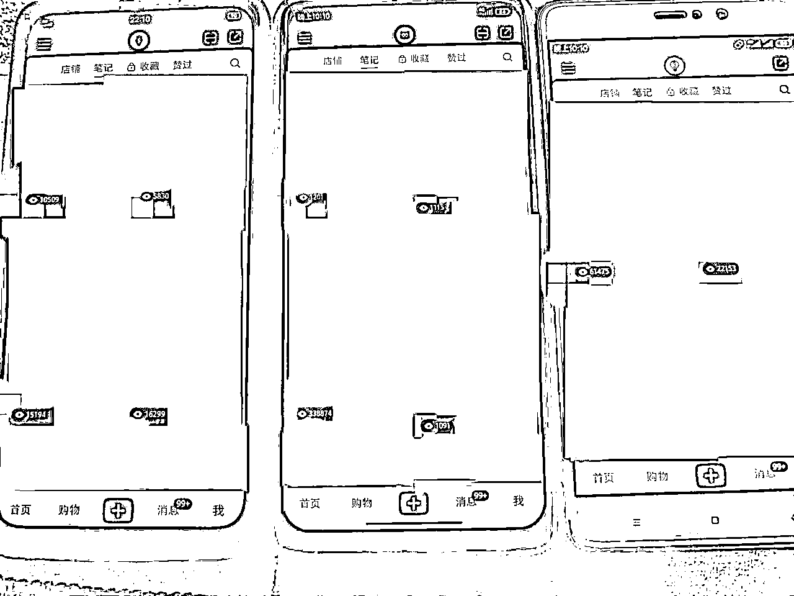
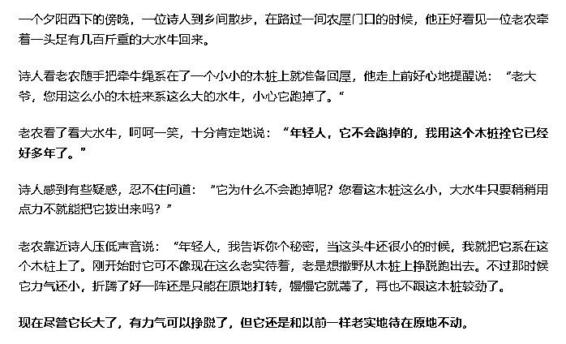

来源：https://w7z4ecauyy.feishu.cn/docx/LsULdIuxco3gyIxtszhcy7lFnOb
大家好，我是傅小闲，我们又见面了。距离上次发帖已经过了一个多月了。上次刚写完文章就病倒了，发烧了好久。病刚好就进入了忙碌的测项目环节，不知道为啥，临近年底，突然就变得好忙，团队同时开了好几个新板块，也正好跟上次航海的时间赶到一块了。。。
上次分享了我做小红书的一些思维方式 以及 数据分析方法论。感兴趣的可以翻下我之前的帖子。这次跟大家聊下我的一些粗浅想法，以及曾经我在路上经历的一些误区。
大致说下最近我干了些什么。前阵子航海我报的小红书无人直播，整个项目测试花了十天左右，流程跑起来没这么麻烦，除了服装板块的，百货的直播后期也跑通了。不过并没有把这个放量去做，团队的基因不太喜欢这种打法。直播测试之后我又去玩了下小红书的站内店铺。因为以前我做的是小众类的打法，也好久没玩了，这次测的是常规百货的打法。目前的结果是批量产出的混剪视频，跑出来好多四五十万播放的，基本都在两千以上的小眼睛。又测试了实拍的效果，也达到了10万以上。当然有些问题还没有进展到就快过年了，比如 小红书挂车权重低的问题。比如 实拍量产混剪的布局 以及 实拍出现违规申诉的模板底限。 这些问题还没有开始测试，前边的一些东西基本都解决了。整个测试并不复杂，测试思路就是破除封建迷信，解决各种玄学问题，把每一个变量提取出来，进行对照实验。

我们在刚做项目的时候，经常听别人说从0-1 从1-100。我们跟着步骤一块去操作，总是拿不到结果，只能看到别人同时做的都跑通了，自己还在原地踏步。所以就有了一个扎心的事实，没人告诉你从0-1 其实并不是整数，它可能是0.7 0.8 0.9 。只要你没有真正到1的时候 你就是没有收入。
基本上我们可以接触到的所有的项目，归根结底都是与人去做竞争。尤其是偏向于大众化的项目，很多人都知道，很多人都在做，甚至有些团队已经深耕好多年，玩法迭代了很多个版本。我们作为新进玩家，我们的竞争对手就是整个市场的所有玩家。只有比同行多走一步，打倒他们，才能到达所谓的1。
至于说自己做一个项目好久了，明明付出了这么多的努力，凭什么还赚不到钱。那只能说 市场检验是你的结果，而不是中间的过程。不要因为一时的得失就心态崩了，要时刻盯着同行，什么时候你对于项目的理解 以及 效果比同行牛逼了，那就到你赚钱的时候了。
一般项目的周期比我们想象的要长。但一个存活了很长时间的项目 门槛一定比新兴行业要高。上一个话题我们提到了：我们在一个项目是否赚钱，取决于你是否能比这个项目的同行牛逼。 而一个古老的行业，你需要先通过长时间学习，才能达到目前同行现有的知识水平。而一些复杂的项目，这个周期甚至能达到三个月以上。
当然，我们并不能简单的宣判一个项目的死刑。应该用科学的方式，去分析 项目是否还属于上升阶段，是增量市场还是存量市场。 同行竞争激烈度怎么样。 学习周期大概需要多久。 用综合的眼光，去分析是否适合自身的情况。
分享一下我刚做项目的一些坑。17年是我真正带团队开始做项目的时候，那会刚毕业，身上啥都没有，本身我学历也不高，因为家庭条件摆在这里，什么帮助都没有。我仔细算了下，哪怕我找个工作能月薪上万（短期贼不现实），想找郑州买个房子 基本没啥指望。所以我本身就没什么选择，只能出来找项目做。（现在挺后悔没有在大公司上过班，后边自己组团队的时候毫无经验，踩了一堆坑）
那会我带了两个朋友，连房租都交不起，挤在朋友的小毛坯房里。什么叫毛坯呢，就是连厕所都没有，上个厕所还得跑到物业那边。。。那时候我选了几个方向：
1：引流 CPA CPS变现
2：淘宝店群
3：自媒体
先说引流，那时候测的有两个方向 1.引流+群裂变+CPS的方式，2.SEO引流的方式。 其实引流主要就是跟平台对抗，怎么不封号，怎么留联系方式。那时候其实整个都跑通了，自己查资料 搞的XML修改代码的方式去裂变，还有一堆杂七杂八的技术。不过我只解决了技术性的问题，当时整个市场变现方式大部分都不正规，我就直接放弃了。包括现在也是，我从来都不去碰一些擦边的东西，或者说自己良心过不去的东西。
淘宝店群：知道这个项目已经很久了，我上大学的时候就进过一些付费群，当时很多人做这个的都闹着不好玩了，要转型。因为我也没有实际操作过，听的多了，就潜意识认为这是一个偏短期的东西，不太想玩，17年我们只初步试了下，那时候小鸭还免费呢，挂个商品，当天下午就出单了。。。就这我们都不太乐意做就闲置了。。我真傻，真的。。。
自媒体：我其实是比较喜欢自媒体的，不过我不写文章，只做二次剪辑。每个刚做自媒体的人都想做出来些贼牛逼的视频。我记得我发布的第一篇视频 我熬夜剪了一个通宵，发上去确实牛逼，记得点赞都几万了。不过精做对于平台初期并不好玩，个人只有这么多精力。后来慢慢学会了什么去重的各种东西，怎么找面向用户的素材。
回归到核心：在我判断一个项目能不能做的时候，自己并没有主观的去判断，也没有认真的实践，简单的就得出一个错误的结论。如果当时all in淘宝的话，很轻松就能拿到大结果，其实当时只是平台简单的迭代一些规则，但实际上深耕下去一点都不难。后来我跌跌撞撞换了很多行业，过了几年还是回到了淘宝，但错过的就找不回了。
送给大家一句话：一个经过独立思考而坚持错误观点的人，也远比一个不假思索而接受正确观点的人更值得肯定，因为前者的人格是独立的，独立的人格比一切都更为重要。
错误的信息得出错误的结论 身边的负面能力会拖垮自己 永远不要高估自己的心理状态
一个人的认知 取决于过往经历的总和。家庭环境，身边的朋友，遭遇的事情，所见 所行 所想 都决定了一个人的认知能力。我们如果能正确的判断一件事，只是因为我们经历过，或者身边见过案例。我们无法评判一个未知的事物，我从来都不信有人可以 生来知之。
优秀的圈子 可以让你看到优秀的人 潜移默化的调整自己的心态 哪怕一次两次的失败，我们总是能看到希望的。
我从小应该算一个好学生，虽然情商一直不高，但能踏踏实实的去学习。在我刚上初中的时候，七门课我六门都接近满分，历史确实偏科。。。因为家庭的一些原因，中途回了老家上学。老家的环境真是一言难尽，每年都有一大批辍学出去的，整体教育质量跟外边完全没法比，我所能接触的所有观念都是，上学没什么用，毕业了还是打工，直接辍学去打工少走十年弯路。。我刚回去的时候 身边的同学看到我仿佛看到一个另类。并且学习从来都是一对多的事情，我特别讨厌重复性的东西，学生的整体水平上不去，有些东西讲了一遍又一遍，后来我实在不想这样了 正式晋升为学渣（确实有点极端）。。 。我不否认有些身处泥泞的人 可以始终坚持。可我当时真的是想不懂，没有目标，没有追求。当一个人失去心中了意义，那大概率是走不下去的。
我后来经常想起那段时间的心理历程。因为我身处两个极端，所以我后来对于环境影响心理的变化十分敏感。
我刚开始做网赚的时候，身边从来没有见过同行，所有的交流都是网友。当你告诉同学你在做网赚的时候 他们甚至以为你在搞诈骗。 我倒是对别人的看法不太在意，但没有同行者啊。平常想找朋友交流，都不知道要聊些什么。当身边只有你自己在坚持一件跟身边人完全不同的路线时，真的很累。 现在的市场环境好些了，老家里面的同学已经一堆进入互联网的坑了，哈哈。
一个身经百战的互联网人，也不能说做一个项目成一个项目。尤其是新人小白的时候，要技术没技术，要钱没钱，啥都没有。当你测了一个又一个项目，始终拿不到结果的时候，本身心态就已经极其不好了。这个时候，身边的指责，现实的压力，很容易心态就崩了。永远不要高估自己的心理承受能力。这个时候，如果你的身边能看到案例，至少你可以告诉自己是有希望的，如果连希望都没有了，那如何能坚持呢。
此处引申一个概念：习得性无助理论。当你测试的每一个东西 带给你的都是负面反馈，一直重复这个动作。你就会看到项目 就开始否认自己，默认自己又是拿不到结果的。感兴趣的可以去搜下这个理论。

所有的项目 我们都是要回归到跟人去竞争。同行业下 同玩法下 我们比同行多走那么一步 我们就可以拿到结果，如果你在每个环节，做的都不如同行，那么很遗憾，除非风口期捡钱的项目才有可能。
以淘宝举例：店群最初的思路 就是批量上品，每个品哪怕获取1个流量，只要你的品够多，那就能出单。
但是粗暴的模式，传播也是简单的，大规模的玩家涌入，都在做一个对抗平台的事情，注定会逐步更新规则。
但平台一般不会直接砍掉一个行业，而我们只需要在同行的水平上多走一步，逐步的迈向正规 符合平台利益的就可以。
比如别人都在上一万品的时候，能不能把这一万个品替换成一千个有效品达到同样的效果。
比如别人都在直接上货的时候，能不能跟着平台的脚步，报个村淘的活动。
当大家都在直接搬的时候，能不能用常规电商的方式去优化下标题，打下词路
当大家都在上爆款货的时候，能不能选下蓝海品
当大家都在玩动销的时候，能不能把选品优化成潜力品
其实每一个细分的环节都可以有一堆优化方向。后来市场上产生的一堆玩法，都是基于某一个特定的点 去领先同行
选品也不仅仅是让你看同行的销量（适用于所有平台）
一个优秀的品应该具备以下特定：经过市场验证，在同样的操作手法下，这个时间段 可以看到效果 这才是潜力品的核心。
经常看一些人选品只会盯着爆款，月销10万+就一定是好的吗。算下同行销量 算下同行客单利润 一看 贼暴力 我上我也行 哪有这么简单
尤其是兴趣电商 选品要跟内容形式 综合去判断。同行的销量是什么时间做的 目前有多少专业团队在做 这个品抗不抗周期 同行的操作效果能不能达到 。尤其是你做的内容没同行好，人家还比你做的早，各种细节都打磨好了。这个时候平台凭什么给你流量啊。
就跟小红书似的。同样的商品，流量只会分给内容好的人。前阵子测完小红书无人直播后，我又玩了几天小红书站内店铺。测试结果就是，只要去重等一些基础配置没啥毛病，那内容形式能跟优秀同行差不多，就能吃到流量。我测试了小十个账号，常规百货，基本发上去很少低于两千小眼睛的，好多都跑到四五十万左右，没碰到过有什么特别bug的账号。说到内容，不要以为很浪费时间，路子通了结合批量化去玩，我自己测试的就是一个电脑一天跑出来六百个视频，测试发的都是这些。当然 只测试了挂车前的流量，后边的还没来的及搞，估计年前没啥子时间了。因为中间小红书站内停了好久了，我还不太懂挂车不给流量怎么去破解，有实操的希望能请教下。
我们往往很难获取到一些真正一线的信息，每个人都有自己信息的壁垒。往往找到的方向都是一堆人在做，或者人家玩好久了，都快是项目小尾巴了，他们才开始大规模培训，我们才能知道有那么个东西。所以针对于大众化的一些项目，我比较喜欢开拓其中的细分领域。因为大众意味着一些基础门槛已经有很多人试错完成了，我们很容易获取到其中的信息。这个时候我就会分析有没有什么突破点，比如A项目的技术 运用 到 B项目上边，这样避开同行内卷的环境，我们就能比同行多走那么一步。 所以我有时候闲了也会去看一些历史的教程，可以开拓我的思路，等积累足够多的时候，再去测一些新的东西也会如鱼得水。
一个人要深耕自己的长久技能 比如获取信息的能力 分析项目的能力 解决问题的能力
如果以上磨练的差不多了，最好的方式就是干就完了，快速测试，快速看结果，不行就换，一般小项目几天就完事了。这个时候只要执行力到位 不可能拿不到结果。
当然有些天花板高，有案例，并且预估自己的团队可以攻克的项目，一定要深耕，一个人的精力是有限的，碰到好的项目要专注 深耕。
在我们做管理的时候，都听过一句话：员工不是培养出来的，只能筛选出来。 事实也确实如此（不过哪怕听了无数次还是会踩坑 哈哈）。扯远了，一些大佬在评判项目的时候，都是以自身为标准，他们认为理所应当的事情，可能在我们眼里就是无法跨越的鸿沟。说句不好听的，往往大佬公司的项目高管，他们的能力都会比我们强好几个等级。当我们共同去看一个项目的时候，确实能做，把你筛选下去换个人就能做了。扎不扎心 哈哈
这个时候，除非人家手把手的帮你，给你各种资源，你才可能把项目走通。所以一定要结合自身的情况，选择适合自己的才行。大佬说的是对的，但你做不了跟错的有啥区别。
尤其是一些段位很高的人，往往他们不会关注一些特别细节的事情，他们管理天赋比较高，哪里有困难，招个能解决困难的人就行。并且他们关注的东西一般比较大，更喜欢一些门槛相对来说较高的东西。而我们需要的只是一些他们看不上的东西，这个时候你去问他们能不能做，他去哪知道。
有一个词叫做 向下兼容。我想好多大捞时间久了都失去这种能力了吧。除了那些经常带小白跑流程的，可以定向的去优化自己向下兼容的能力。当你月入五万之后，以前那些朋友去跟你聊，自己待的公司老板多么的狗，同事多难相处，下星期的饭钱还没着落，经历都完全不同怎么去共情。更别说一些大佬连百万级的盘子都没啥子兴趣。
所以要认清自己的优势劣势，用科学的方式去判断事情，找到真正适合自己的道路。
不知道大家有没有一些疑惑，有些同行做的比你好的公司，你真正跟着他们的流程走一遍之后，发现他们的整个操作流程特别LOW，没有严谨的选品方式，没有标准化的流程，有些重复性的工作也没有自动化去替代。但是他们就是比自己做的要好。
根据我们这边过往失败项目的经历。会发现很多时候部门亏损并非项目本身有问题，或者说某个技术节点没有走通，而是员工在实操过程的错误理解，以及不正确信息反馈导致的问题。往往我们在做一个项目，都是有确定的案例数据，然后搭建一个SOP的流程，让员工去实操。我们去搭建SOP流程时，往往是以自身思路为出发点，然后确定某一个数据范围，比如卡人气多少，销量多少，潜力值数据多少以上。甚至于每个模块搞成软件自动化操作。理论上是快了，但是效果往往极其不理想。因为当我们确定某一个数值的时候，员工的思维只会以这个确定的数值为导向，并不会思考为什么，只要是符合数值的就是任务完成了，不符合数值的就直接干掉，不会思考为什么要这样卡，这样几天下来员工就废了。如果一个流程简单的项目，可以这样做，但是有些项目本身就是极其复杂的。一个淘宝运营一两个月只能刚刚入门。面对这种项目，我们的SOP流程一定是以引导为主，让员工有思考的能力，知道什么样的品是优秀的品，有哪些寻找入口，有几种判断方式。往往这种简单点的方式，效果反而会更好。
有一个词叫做 知识的诅咒 。我们在向别人表达意思的时候，是以自身所了解的所有的东西所支撑的，我们自己认为一些理所应当的事情，在被人耳中完全听不懂。所有在我们制定流程时，要以员工的视角去看待下问题。员工不会替你考虑整体的得失，只会在乎有没有完成任务，赶紧干完之后去哪吃烧烤。
前阵子我突然意识到我做互联网这么多年，朋友并不算多，但每一个都陪我走了很多很多年。而每次因为具体的项目需要去对接资源的时候 所接触的人，往往交流都极其有限。所以我现在并不希望 大家是因为我做的具体的某些项目来简单定义我。我也不希望自己被一些项目所禁锢，别人一聊，都是这个做淘宝的人，这个做小红书的人。而我们不应该被项目所定义，应该是大家认可我这个人 而不是某一项具体的资源。
重新介绍下自己：我是傅小闲。97年出生。地标郑州。一个没有太大野心的人。一个想悠闲却始终闲不下来的人（所以我给自己起名傅小闲 哈哈）。一个并不高冷的人（如果你觉得我高冷，一定是我有点社恐了。。），15年接触互联网项目，实操过项目有点多我都数不清了，所以我也不知道我这有哪些资源，可能我的一些零零碎碎的东西正好对大家有用，毕竟我们团队的人好多都偏向于技术。目前我的生活状态：失眠严重患者，习惯性凌晨五点睡觉，中午12点到下午2点左右起床，下午开始忙各种杂事，晚上闲了去二七广场看小姐姐，忙的话就不出门。所以有时候我回信息慢，只是因为我可能在睡觉，或者真的在忙，，真的不高冷。
大家可能发现我分享的一般思维方向居多，个人感悟居多。因为有些项目特别细节的东西 可能是我某个朋友的公司主要现金流，我也怕一不小心泄露些 别人因为认可我 而对我没有保留的一些东西。我觉得这样是不合乎道德的。换位思考 每个人都不喜欢信任的朋友这样对自己。如果有些东西，是我自己研究出来的，或者我单独在做的，欢迎来找我，我会毫无保留的分享。另外，我自己亲身经历，最难解决的问题永远是心理的问题，而不是具体的某项技能。一个信念坚定的人，不可能会失败的。
说个题外话，目前我在测试的东西挺多的，其中大致有： 小红书混剪 小红书实拍 小红书真人直播 tiktik小黄车
有些细节是跑通的 有些没有跑通的。希望有在这些方向实操的小伙伴，可以来指点我一下。如果对我真的有帮助，可能某些流程我会优化后回馈给你。以及收获一个最可爱的朋友 傅小闲 哈哈。
文章到这里也就结束了，上次我写文章之后 好多人加我想要付费。再次重申下，我这里没有任何的付费项目，培训对于我来说性价比并没有这么高，我也不喜欢这条路。如果有什么问题，只要能说的我不忙的情况下可以直接告诉你的。虽然有些领域我们有些许成绩，但我也从来不觉得自己是什么所谓的大佬，我只希望可以找一些志同道合的小伙伴，大家一起共同成长，共同进步。拜拜！大家有缘下次再见！